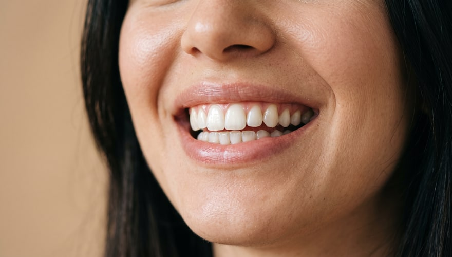

Blogartikel
Bloginhalte, die die Behandlungsseiten speisen — datenverankert und rechtssicher. Jeder Artikel bringt fertiges WordPress-HTML plus Article-/FAQPage-Schemas mit.
 Zahngesundheit ab 60: Zahnverlust, Prothesen und ImplantatoptionenTR: 60 Yaş Üstünde Diş Sağlığı: Kayıplar, Protezler ve İmplant SeçenekleriZahnverlust, Mundtrockenheit und Prothesenoptionen ab 60: wann Implantate ins Spiel kommen — und worauf pflegende Angehörige achten sollten.
Zahngesundheit ab 60: Zahnverlust, Prothesen und ImplantatoptionenTR: 60 Yaş Üstünde Diş Sağlığı: Kayıplar, Protezler ve İmplant SeçenekleriZahnverlust, Mundtrockenheit und Prothesenoptionen ab 60: wann Implantate ins Spiel kommen — und worauf pflegende Angehörige achten sollten.
 Karies bei Kindern vorbeugen — evidenzbasiert: ein praktischer Leitfaden für FamilienTR: Çocuklarda Diş Çürüğünü Önlemenin Kanıta Dayalı Yolları: Ailelere Pratik RehberKariesprophylaxe bei Kindern: Timing des ersten Checks, Nuckelflaschenkaries, Putzen nach Alter, Zuckerfrequenz und vorbeugende Behandlungen.
Karies bei Kindern vorbeugen — evidenzbasiert: ein praktischer Leitfaden für FamilienTR: Çocuklarda Diş Çürüğünü Önlemenin Kanıta Dayalı Yolları: Ailelere Pratik RehberKariesprophylaxe bei Kindern: Timing des ersten Checks, Nuckelflaschenkaries, Putzen nach Alter, Zuckerfrequenz und vorbeugende Behandlungen.

Bleaching: 8 Mythen, die sich hartnäckig haltenTR: Diş Beyazlatma Hakkında Doğru Bilinen 8 YanlışMachen Zitrone und Natron die Zähne weiß? Schadet Bleaching dem Schmelz, wie lange hält es? Wir rücken 8 verbreitete Bleaching-Mythen gerade. 7 Faktoren, die über die Haltbarkeit einer Zahnkrone entscheidenTR: Diş Kaplamasının Ömrünü Belirleyen 7 EtkenWarum hält eine Zahnkrone bei jedem anders lange? Von Mundhygiene bis Zähnepressen, von Kontrollen bis Materialwahl — 7 Faktoren erklärt.
7 Faktoren, die über die Haltbarkeit einer Zahnkrone entscheidenTR: Diş Kaplamasının Ömrünü Belirleyen 7 EtkenWarum hält eine Zahnkrone bei jedem anders lange? Von Mundhygiene bis Zähnepressen, von Kontrollen bis Materialwahl — 7 Faktoren erklärt.
 Zahngesundheit in der Schwangerschaft: Was in welchem Drittel behandelt wird — und was wartetTR: Hamilelikte Diş Sağlığı: Hangi Dönemde Ne Yapılır, Ne Ertelenir?Zahnfleischbluten, Schmelzverlust durch Übelkeit, Planung nach Trimestern, Röntgen und Stillzeit: der Leitfaden zur Zahngesundheit in der Schwangerschaft.
Heilung nach dem Zahnimplantat: Was Sie erwartet — Etappe für EtappeTR: İmplant Sonrası İyileşme: Aşama Aşama Ne Beklemeli?Die Implantatheilung Etappe für Etappe: die ersten 24 Stunden, Woche eins, Knocheneinheilung, Versorgungsphase und Langzeitpflege. Welche Zeichen zählen?
Zahngesundheit in der Schwangerschaft: Was in welchem Drittel behandelt wird — und was wartetTR: Hamilelikte Diş Sağlığı: Hangi Dönemde Ne Yapılır, Ne Ertelenir?Zahnfleischbluten, Schmelzverlust durch Übelkeit, Planung nach Trimestern, Röntgen und Stillzeit: der Leitfaden zur Zahngesundheit in der Schwangerschaft.
Heilung nach dem Zahnimplantat: Was Sie erwartet — Etappe für EtappeTR: İmplant Sonrası İyileşme: Aşama Aşama Ne Beklemeli?Die Implantatheilung Etappe für Etappe: die ersten 24 Stunden, Woche eins, Knocheneinheilung, Versorgungsphase und Langzeitpflege. Welche Zeichen zählen?
 Implantat oder Brücke? Ein Entscheidungsleitfaden für den fehlenden ZahnTR: İmplant mı Köprü mü? Eksik Diş Tedavisinde Karar RehberiImplantat oder Brücke? Wie beide Optionen funktionieren, die Rolle von Nachbarzähnen und Knochen und die Pflegeunterschiede — eine Entscheidungshilfe.
Implantat oder Brücke? Ein Entscheidungsleitfaden für den fehlenden ZahnTR: İmplant mı Köprü mü? Eksik Diş Tedavisinde Karar RehberiImplantat oder Brücke? Wie beide Optionen funktionieren, die Rolle von Nachbarzähnen und Knochen und die Pflegeunterschiede — eine Entscheidungshilfe.
 Aligner oder Zahnspange? Ein Leitfaden zur Kieferorthopädie im ErwachsenenalterTR: Şeffaf Plak mı Diş Teli mi? Yetişkinlikte Ortodonti RehberiAligner oder Zahnspange — was ändert sich im Alltag? Ein Blick auf Aussehen, Hygiene, Essen und Termine als Entscheidungshilfe für Erwachsene.
Aligner oder Zahnspange? Ein Leitfaden zur Kieferorthopädie im ErwachsenenalterTR: Şeffaf Plak mı Diş Teli mi? Yetişkinlikte Ortodonti RehberiAligner oder Zahnspange — was ändert sich im Alltag? Ein Blick auf Aussehen, Hygiene, Essen und Termine als Entscheidungshilfe für Erwachsene.
 Wie wirkt Stress auf Ihre Zähne? Pressen, Knirschen und KieferschmerzTR: Stres Dişlerinizi Nasıl Etkiler? Sıkma, Gıcırdatma ve Çene AğrısıWie löst Stress Pressen und Knirschen aus? Tages- und Nachtmuster, die Spuren an den Zähnen, Folgen fürs Kiefergelenk und Maßnahmen für den Alltag.
Wie wirkt Stress auf Ihre Zähne? Pressen, Knirschen und KieferschmerzTR: Stres Dişlerinizi Nasıl Etkiler? Sıkma, Gıcırdatma ve Çene AğrısıWie löst Stress Pressen und Knirschen aus? Tages- und Nachtmuster, die Spuren an den Zähnen, Folgen fürs Kiefergelenk und Maßnahmen für den Alltag.